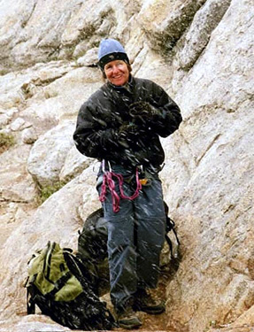

|
e-Grips Routesetting Interview: Diane Russell 
eG: When did you begin climbing and routesetting?
DR: I was raised in Boulder Colorado. My family spent weekends at our family cabin in Wild Basin where I scrambled up trees & cliffs until my frightened parents called up Cleve McCarty and he introduced me to my first roped climbing experience in 1969. (Cleve was my dentist & my father’s climbing partner when they were younger) I climbed on Cookie Jar Rock, a boulder on Flagstaff and I loved it! He suggested Colorado Mtn. Club for further instruction. I became involved with the junior’s club & worked my way up from assistant to senior climbing instructor over the next four years.
My introduction to a climbing community began after high school when I moved to Estes Park and began my first job at Komito’s selling and repairing climbing & hiking boots. In 1975 I moved to Santa Cruz, CA where I went to school & learned my next profession: cabinetry & carpentry, which I did for the next 18 years. During the summers between school I returned to Estes & worked as a guide for Colorado Mountain School with Mike Donahue.
Route setting began for me 25 years after I first climbed Cookie Jar Crack. Three years into my competition chapter, Tom Davis asked if I would like to come to work at a new gym he was building in Santa Cruz. At this point I put down my tool belt & picked up my cordless drill. I transferred my love of building to creating routes.
eG: You’re at one of the great old school gyms in the country, Pacific Edge - what makes this gym stand out?
DR:Old School! Does that mean made in 1993 or that half our walls are vertical or our staff is older than 25 or that our level of craft is superior? Our climbing school style is traditional. I like it that PE is old school! We take our route-setting seriously! We change the routes often & they are always high quality & technical in nature. Our members may curse us on the plastic, but when they climb outside they are prepared. The first thing that strikes a new person entering the PE is the 50-foot walls (ahead of our time) and the natural lighting from the skylights. The walls have appealing features that imitate the arêtes, corners & cracks of our neighbor climbing area Yosemite. The climbing community is warm and welcoming & many new relationships have bloomed here.
eG: You used to compete in the mid-nineties - how do you think indoor climbing and competitions have changed in the past decade or so? Feel free to share some stories… all the new setters out there would love some history!
DR: I started competing in 1990. My fellow competitors were all outdoor climbers. For me it was a great opportunity to travel, possibly win some money, and receive some sponsorship doing something I was passionate about. I spent time in "iso" with a talented group of climbers: Bird L., Bobbi B., Alison O., and Shelley P. (all before they were married) to name a few. That year I traveled to Europe with a group of Americans including Hans F. and Steve S. In between comps we climbed some of the best limestone in France. At my first world cup, I sat in iso. with Lynn Hill, right before she went out to climb (and go on to win the comp). I was in awe of her ability. I didn’t even know how to climb overhanging walls; I was a slab climber who didn’t even make it out of the qualifying round. So my learning curve on this trip was tremendous.
I was invited to the first X-Games. This was a luxury affair for a climber, with all expenses paid & the opportunity to win money. It turned out I had more talent at speed climbing than the difficulty.
Throughout my 9 years of competing I met & climbed with some of the most talented climbers in the country, all of us new to plastic and coming from an outdoor experience of climbing.
Now the competitors & route setters are much younger. We even have climbing mom’s & dad’s (similar to soccer or baseball) and teams that travel & compete together. Most of them were introduced to climbing on plastic at an indoor gym. I have been very fortunate to watch some extremely gifted young people (Chris Sharma & Tiffany Hensley) develop into fantastic climbers.
eG: Does your experience as a competitor give you a different take on routesetting? Is climbing outside the most inspiring? What motivates you as a routesetter?
DR: Route setting for competitions is always a thrill! We set; we test, tweak holds, second guess ourselves & finally exhausted & out of time surrender our art to the competitors. I find technical routes the most interesting to climb, I seek them outside & I build them inside. After a climbing trip outside I am inspired to replicate & transform my favorite moves onto plastic. When our new "holds of the month" arrive I am at my creative best. In general any day route setting is a good day! The routes build themselves from the selection of holds. It is a fantastic process and I look forward to experiencing my own creations & testing all the new routes in the gym to confirm the grade. I enjoy watching people climb my routes.
I enjoyed one of the early comp/route setting clinics that Steve Schneider did at PE. The organization of certification was just beginning so it was a casual approach. Chris Bloch, myself & the owner of Vertex were the only "students".
eG: I’ve visited your gym, and it’s pretty huge.. do you have a crew of setters that work the gym regularly for commercial setting and comps?
DR: PE spends 40 to 50 hours per week setting. We currently have a crew of four guys, my partner Caroline (who has been setting for over 10 years) and myself. For competitions we have a reserve list of setters.
eG: Do you get out to other climbing areas and indoor gyms often? From your experience, what do you think makes a good setter for a gym like Pacific Edge?
DR: In 1990 I invested in the first gym in the Bay Area - City Rock in Emeryville. The Bay area enjoys the highest concentration of climbing gyms in the country. I used to make a point of visiting them all, because I am curious about how other gyms are developing and I wanted to check out the route setting. I liked the steep terrain of some gyms but found the routes to be very ladder like and unimaginative. I have checked out climbing gyms in Britain over the last few years & stashed away some ideas for future additions to PE. Fortunately I get out to the crags for a number road trips each year & I love to explore areas that are new to me.
When hiring a new route setter at PE, I require that a prospective route setter have extensive outdoor experience. They "audition" by setting a route at the 5.8 - 5.9 grade. The reason for this is all of our setters must share setting all grades, and this is a difficult grade to hit & make interesting & accessible for all of our members. So a setter for PE needs outdoor experience, have a natural talent for setting, love to set routes at any grade, make the route stimulating, handle criticism & do their share of washing holds.
eG: What are your favorite kind of routes or boulder problems to set? Terrain? Grade? Difficulty? Do you have a particular style yourself?
DR: Give me any blank wall with t-nuts & a pile of new holds! Add a few natural features such as corners or arêtes & leave me alone. I love to set a 5-10 degree overhanging wall. I’ve been setting for almost 15 years now & I am always changing it up. I might set a "theme" route of only pinches or pockets, or use holds that I’m not as adept at climbing or make the route awkward, balancy or technical. (Or "chaotic" as one member commented) I spend a lot of time creating a route, so I believe the person climbing it should ponder their way up. Caroline & I joke that a person needs to have a PHD in engineering & yoga to climb our routes. A thoughtful vertical puzzle that one solves with their body - what a great game! Our lead cave is another favorite place to set because of the challenge of upside-down terrain. This can be a burly setting day & gratify to watch others climb. For commercial routes I enjoy setting hard 10’s & up to mid-11’s because these routes see the most travel. For competitions I prefer to organize & test the routes rather than set them. Boulder setting I leave to those who love to dyno.
eG: How do you think setters can learn to develop their own styles?
DR: A new route setter develops their own style naturally by their preferences of footholds & moves. I believe that a setter can improve by watching people of all sizes and abilities climb their routes. As a benefit, route setters become much better at on-sighting routes. Climbing outside for motivation & experience is essential. Having a sense of humor, being receptive to criticism and a willingness to add footholds complete the prospective setter.
eG: Any favorite e-Grips sets? Pacific Edge is on the eG First Dibs program, and we’re always trying to get the best new stuff out to you - is there anything you’d really like to see that hasn’t been done yet!?
DR: I love e-grips! The shapes, texture & durability. When Ty & Ian first came out with the foot disks, I was hooked. At that time there were no durable small foot chips on the market. I’ve been a fan from the beginning (I think PE still has some pre-e-grip artistic holds that Ty sold us when he was passing through the Cruz) The First Dib’s program is fantastic with all the surprising new shapes. I’m crazy for the new limestone hueco & pocket series!
I would like to see shallow thin finger-tip size cracks that melt into the wall. (there is something like this in the Dakota pinches set) Also a Piggyback hold with 3/8" t-nut holes, so you don’t have to change bolt sizes.
eG: Thanks Diane - have fun setting and climbing in and around Santa Cruz!
|